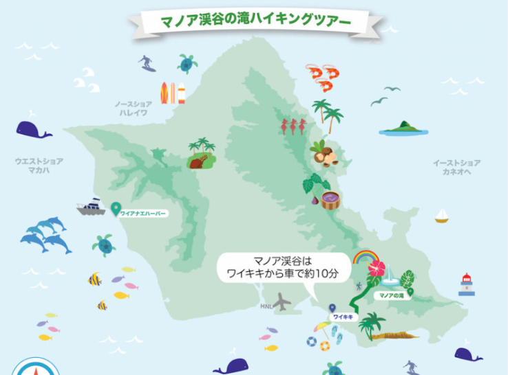

母の60歳お祝い / Mother’s 60th Birthday 🎉
ハワイ家族旅行しおり / Hawaii Family Trip Itinerary
期間 / Dates: 2025年10月4日（土）〜 10月12日（日） / Oct 4 (Sat) – Oct 12 (Sun), 2025
行き先 / Destinations: オアフ島 & マウイ島 / Oahu & Maui
📅 旅程表 / Itinerary（詳細 / Detailed）
| 日付 / Date | スケジュール / Schedule | エリア / Area |
|---|---|---|
| 10/4（土） Oct 4 |
|
オアフ（ホノルル） |
| 10/5（日） Oct 5 |
|
オアフ |
| 10/6（月） Oct 6 |
|
オアフ（コオリナ） |
| 10/7（火） Oct 7 |
|
オアフ → マウイ |
| 10/8（水） Oct 8 |
|
マウイ（ワイレア） |
| 10/9（木） Oct 9 |
|
マウイ（ワイレア） |
| 10/10（金） Oct 10 |
|
マウイ → オアフ |
| 10/11（土） Oct 11 |
|
オアフ（ホノルル） |
| 10/12（日） Oct 12 |
|
ホノルル出発 |
🏨 ホテル詳細 / Hotels
Halekulani（10/4–5）
| 所在地 / Location | 2199 Kalia Rd, Honolulu, HI 96815 |
|---|---|
| 部屋 / Room | Diamond Head Ocean Front Prime（Twin beds 確約） |
| 予約番号 / Booking No. | 76559SF013609 / 76559SF013608 |
| 料金 / Rate | USD 1,289 / 泊 |

The Ritz-Carlton Residences Waikiki Beach（10/5–7）
| エリア / Area | ワイキキ / Waikiki |
|---|---|
| 部屋 / Room | デラックスオーシャンビュー × 2室 |
| 予約番号 / Booking No. | 99531620 |
| 料金 / Total | USD 3,260.47 |

Andaz Maui at Wailea Resort（10/7–10）
| 所在地 / Location | 3550 Wailea Alanui Dr, Wailea, HI 96753 |
|---|---|
| 部屋 / Room | 3 Bedroom Ilikai Villa – 1 King + 3 Queens（5名） |
| 予約番号 / Booking No. | 3584153 |
| 料金 / Total | USD 11,888.21（内訳：10/7 $3,200・10/8 $3,417・10/9 $3,311＋税サ $1,960.21） |
🗺️ マップ / Maps
マウイ島 / Maui
オアフ島 / Oahu

⛳ ゴルフ / Golf
Ko Olina Golf Club（オアフ）
名物ウォーターハザードが美しいチャンピオンシップコース。
朝のスタートで涼しく、プレー後にコオリナ・ラグーン散歩も◎。
- 住所：92-1220 Aliinui Dr, Kapolei, HI
- メモ：レンタルクラブあり・ドレスコード要確認
Wailea Golf Club（マウイ）
ワイレアの代表的リゾートコース。海を望む開放的な景観でリゾート感満点。
- コース：Gold / Emerald / Blue
- メモ：昼は日差し強め、帽子＆日焼け対策を

🎡 アクティビティ / Activities
カカアコ・ファーマーズマーケット（オアフ）
ローカルのグルメや雑貨が集まる土曜朝の人気マーケット。混雑前に到着推奨。
- ハイライト：フードトラック、ハンドクラフト
- Tips：朝9時前が歩きやすい
マノア滝ハイキング（オアフ）
熱帯雨林の木道を進む初心者向けトレイル。雨具・滑りにくい靴推奨。
- 距離：約3km 往復
- 所要：1.5〜2時間


タンタラスの丘 夜景（オアフ）
プウ・ウアラカア州立公園からホノルルの夜景を一望。サンセット前到着がベスト。
イアオ渓谷州立公園（マウイ）
尖峰イアオ・ニードルと緑濃い渓谷。遊歩道で手軽に散策できます。
ラハイナ・タウン散策（マウイ）
歴史ある港町の雰囲気。中心部は混み合うため、周辺駐車場の活用を。
カアナパリ・ビーチ（マウイ）
白砂のロングビーチ。夕日の時間帯がおすすめ。
マウイ・オーシャン・センター（マウイ）
屋内でハワイ固有の海洋生物を鑑賞。チケットは事前購入がスムーズ。

🚗 おすすめロードトリップ / Recommended Road Trip
Road to Hana Day Trip（マウイ）
日帰りで楽しむモデルコース。代表スポットと体験メモをまとめました。
1) Ho‘okipa Beach Park（MM9）
- 朝でもウミガメに遭遇することあり。サーファー観戦も◎
2) Garden of Eden（MM10.5）
- 約1.5時間の植物園散策。虹色ユーカリ・滝・海の眺め
3) Ke‘anae Lookout（MM16–17）
- 黒い溶岩海岸と迫力の波。写真映えスポット
ランチ＆休憩
- Coconut Glen’s（MM19）：ココナッツミルクアイス
- Hana Farms（MM38）：ピザ（パイナップル＋ハラペーニョ）
4) Pipiwai Trail（MM42）
- 竹林と滝。マカヒク滝展望で折り返し
帰路：Laulima Farm（MM41）
- 果物プレートで休憩、静かな午後
Hana Town
素朴な小さな町。ベーカリーや商店でひと休み。


🍨 スイーツ / Sweets
Island Vintage Coffee（オアフ）
名物アサイーボウルは濃厚ハニーとグラノーラの相性抜群。朝食にも◎
- おすすめ：Acai Bowl、コナコーヒー
Hawaiian Shaved Ice（各島）
ふわふわかき氷。トッピングにコンデンスミルクやアイスを追加して贅沢に。
- おすすめ：リリコイ／グアバ／ココナッツ

🍽️ レストラン / Restaurants
53 By The Sea（オアフ）
海を望むロマンチックなダイニング。記念日に最適。
- Signature：シーフードパスタ、和牛ステーキ

Michel’s at the Colony Surf（オアフ）
オーシャンフロントの老舗フレンチ。サンセットが美しい名店。
- Signature：ロブスタービスク、テーブルサイド・シーザー

Nick’s Fishmarket（マウイ）
ワイレアの人気シーフード。サービスも安定。
- Signature：オパカパカのグリル、アヒタルタル

Da Kitchen（マウイ）
ボリューム満点のローカルプレート。家族シェアにぴったり。
- Signature：ロコモコ、スパムむすび

Mama’s Fish House（マウイ）
海辺の超人気店。予約必須。
- Signature：ココナッツ・クラストのマヒマヒ、ポケボウル
✈️ フライト詳細 / Flights
| 日付 / Date | 区間 / Route | 便名 / Flight | 出発 / Departure | 到着 / Arrival | 座席 / Seats |
|---|---|---|---|---|---|
| 10/4（土） | 東京（羽田） → ホノルル | JL6410 | 20:15 (HND) | 09:00 (HNL) | 順子:1A ・ 瑛介:1B |
| 10/12（日） | ホノルル → 東京（羽田） | JL073 | 12:15 (HNL) | 15:55+1 (HND) | 順子:4A ・ 瑛介:4B |
| 10/4（土） | シドニー → ホノルル | QF103 | 19:25 (SYD) | 08:50 (HNL) | 悠介:57B ・ Brenna:57A |
| 10/12（日） | ホノルル → シドニー | QF104 | 11:00 (HNL) | 18:30 (SYD+1) | 悠介:52J ・ Brenna:52K |
| 10/7（火） | ホノルル → マウイ（カフルイ） | HA236 | 10:52 (HNL) | 11:35 (OGG) | 家族 21A–21F |
| 10/10（金） | マウイ（カフルイ） → ホノルル | HA265 | 13:30 (OGG) | 14:14 (HNL) | 家族 20A–20F |